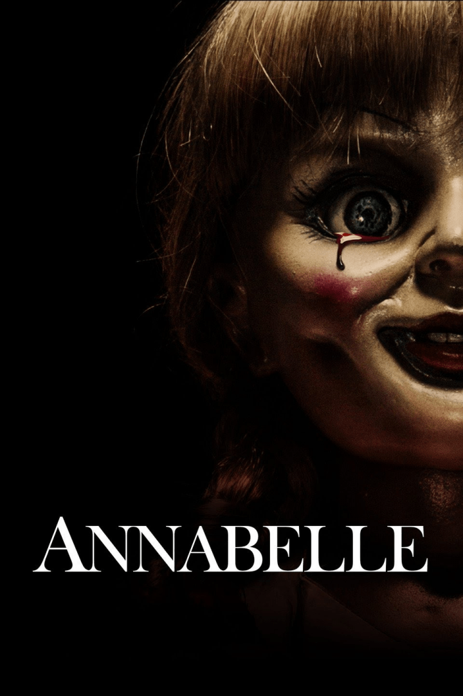

Annabelle
IMDb RATING: 5.5/10

"Annabelle" is a spin-off from The Conjuring universe, focusing on a cursed doll that wreaks havoc wherever it goes. The first film, Annabelle (2014), shows how the doll becomes linked to dark supernatural forces after a cult ritual. With its eerie atmosphere, the film explores themes of possession, loss, and terror. Its sequels, Annabelle: Creation (2017) and Annabelle Comes Home (2019), delve into the doll’s origins and its impact on different families and individuals. This series is renowned for its tension-filled scenes and creepy settings, solidifying its place as a modern horror favorite.
- Here is for IMDb page!!